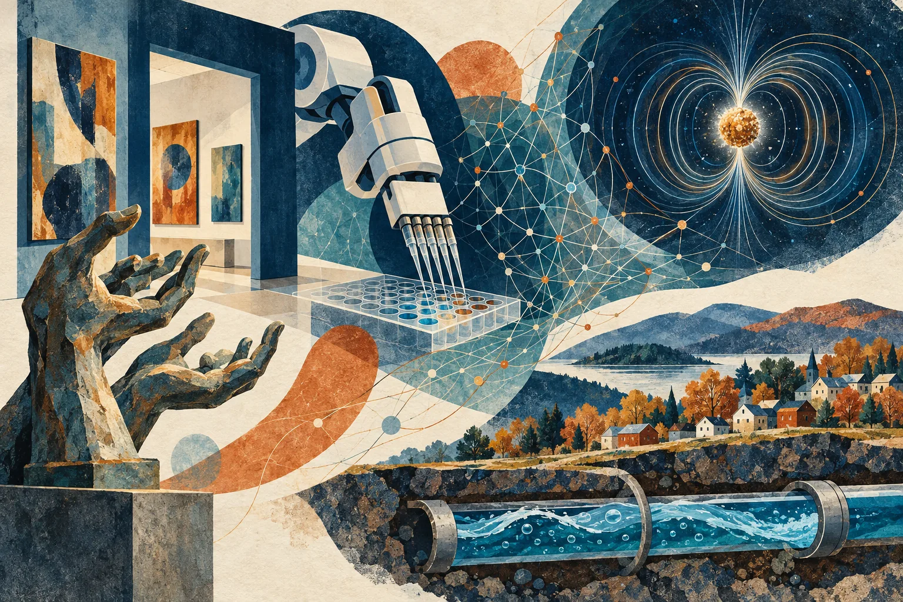

Independent daily digestFive stories worth your time
The Daily Curiosity
Making the unseen visible: campus galleries reveal the care in skilled work, laboratory AI confronts physical reality, investigators trace digital fraud, physicists hold antimatter still, and small towns invest beneath their streets. Five discoveries beyond the obvious headlines.

AI-generated editorial illustration · The Daily Curiosity. Imagined scenes, not documentary photographs or technical diagrams.
STORY 01 · Higher education · SUNY
SUNY’s galleries put everyday care on the wall
SUNY’s October 22 guide to campus exhibitions highlights a Plattsburgh show that uses sculpture and photography developed through long-term relationships with Adirondack tradesmen and craftsmen to examine masculinity through care and skilled labor. “Hands That Nurture: Perceptions of Masculine Devotion,” by Shawndel N. Fraser, opened October 20 and runs through December 4, alongside a separate international poster exhibition about women’s rights. The wider guide shows a less visible public role for campuses: their galleries connect local communities with art and discussion close to home.
Source published 2026-10-22 · Briefing date 2026-10-22
For a laboratory AI, valid code can still hit the wrong thing
Google Research has described VERID, a laboratory framework that tracks robot geometry, liquid volumes and equipment state so AI-generated experiments can be simulated and checked before a robot acts. The work tackles a practical gap in autonomous science: a command can be valid software yet collide with equipment, draw from an empty well or produce a misleading experiment. Google reports prototype studies and keeps humans responsible for reviewing protocols and supervising runs; these are building blocks for more reliable research, not evidence of a fully independent laboratory.
Source published 2026-10-16 · Briefing date 2026-10-22
A cybercrime takedown follows the money across borders
INTERPOL reported that Operation Serengeti III, conducted from June 29 through August 31, led participating authorities to arrest 1,462 suspects, disrupt 10,909 malicious networks and recover more than $105 million. The effort brought together investigators from 20 African countries and the United States, with private-sector intelligence supporting cases involving ransomware, business email compromise and investment scams. The results illustrate why digital defense also depends on financial tracing and international cooperation; investigations remain active, and arrests are not convictions.
Source published 2026-10-22 · Briefing date 2026-10-22
One trapped antimatter particle could test a rule of the universe
Northwestern physicists have created a one-positron quantum cyclotron, cooling and controlling a single antimatter counterpart of the electron while keeping it separated from ordinary matter in a trap. The study, published October 21 in Physical Review Letters, opens a path to comparing the magnetic properties of electrons and positrons with greater precision. A mismatch could challenge a fundamental symmetry of the Standard Model, but the reported advance is the controlled particle itself: the decisive comparison is still ahead.
Source published 2026-10-21 · Briefing date 2026-10-22
The next big local investment may be under the street
North Country Public Radio reports that ten North Country municipalities are among the latest recipients of state water-infrastructure grants, including $22 million for Henderson and $14 million for Elizabethtown. Henderson’s award supports a sewer district for the town and surrounding area, while Elizabethtown’s supports a municipal sewer and wastewater-treatment system. These are funding awards rather than completed systems, but they address a basic local challenge: paying for infrastructure that protects water quality and serves communities long after the ribbon-cutting.
Source published 2026-10-20 · Briefing date 2026-10-22